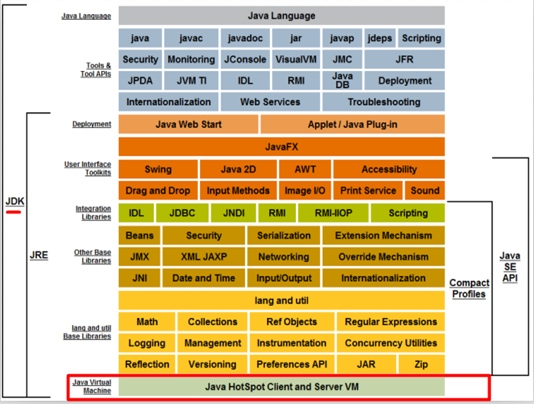
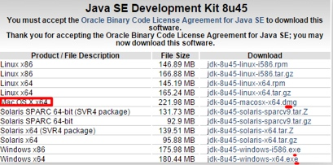
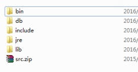
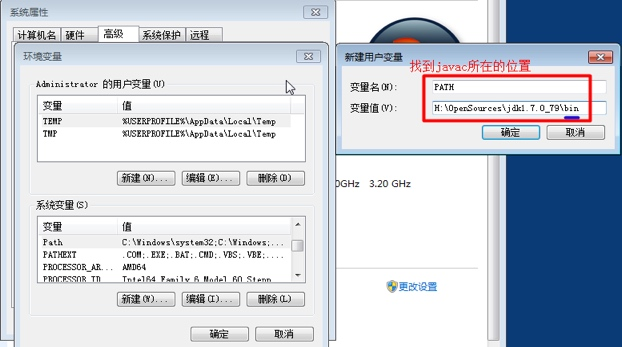
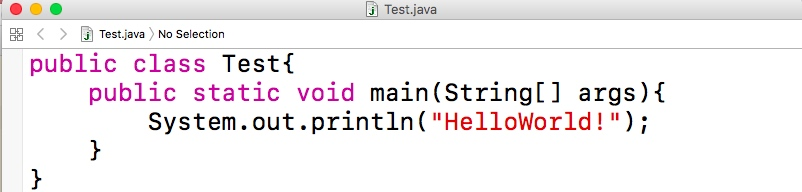
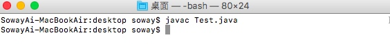
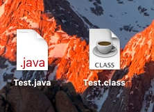
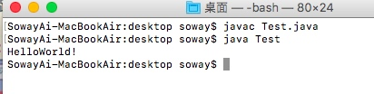
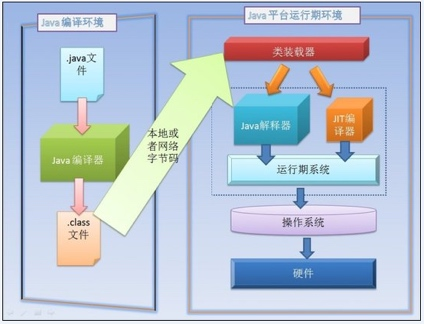

Java概述
Java历史背景
1982年，SUN(Stanford University Network)公司诞生于美国斯坦福大学校园，并于1986年上市。Java在NASDAQ（纳斯达克：是全美证券商协会自动报价系统）的标识为SUNW，2007年改为SUN。2009年4月20日19点40分，美国数据软件巨头甲骨文公司（Oracle）宣布以74亿美元收购SUN公司。
1995年5月，SUNW推出Java。它是Java面向对象程序设计语言和Java平台的总称。
Java的三大平台:
- 1999年SUN公司发布了基于Java的三个平台技术标准：J2SE,J2EE,J2ME。2005年开始分别改名为：JavaSE，JavaEE，JavaME。
- ① Java SE（Java Platform Standard Edition）：Java标准平台，它允许开发和部署在桌面、服务器、嵌入式环境和实时环境中使用的Java 应用程序，如做一个桌面版的QQ，JavaSE能为Java EE和JavaME提供开发基础。
- ② Java EE（Java Platform Enterprise Edition）：Java企业平台，可帮助开发和部署可移植、健壮、可伸缩且安全的服务器端Java应用程序，如企业的应用系统ERP等。Java EE是在Java SE的基础上构建的，它提供Web服务、组件模型、管理和通信API，可以用来实现企业级的面向服务体系结构（SOA）和Web等应用程序。
- ③ Java ME（Java Platform Micro Edition）：Java微型平台，也叫K-JAVA，用来开发移动设备和嵌入式设备（比如手机、PDA、电视机顶盒和打印机等）。随着Android的迅猛发展，JavaME现在使用的越来越少了，Android会逐渐的取代JavaME的市场份额。 > - 只有学好JavaSE才能很好的掌握JavaEE和Android的知识。对于Java的就业，很少有人从事单纯的JavaSE开发的，这不是Java的强势之处，我们应该面向市场更广阔的JavaEE和Android就业方向。
Java语言特性
简单、面向对象、安全、跨平台、多线程、健壮、分布式等
Java开发环境配置
步骤1:安装JDK
步骤2:配置PATH环境变量
注意Mac系统内置Java开发运行环境，无需做以下操作。
JDK提供开发环境支持
- Java程序是
跨平台的，一次编译到处运行。这主要得益于Java虚拟机（Java Virtual Machine),简称JVM。它是运行所有Java程序的虚拟计算机，好比是街机游戏的模拟器。 - JRE（Java Runtime Environment）中包含JVM，它是java的运行环境。如果要运行Java程序就需要JRE的支持。
- JDK（Java Development Kit),包含Java开发的所有工具，JRE也包含其中，所以要想做Java开发，必须要安装JDK。
- 注意 Java程序是跨平台的，依赖于JVM。但是JVM不是跨平台的，所以不同平台要安装不同的JDK版本。JDK不要安装在带中文的路径下,最好也是不包含空格字符的英文路径;  
环境变量的配置
- JDK的目录结构如下
- bin:存放了Java的操作工具，比如编译工具javac,启动JVM的java等。
- db:存放了Java测试的数据库derby，企业不用。
- include：存储C++的头文件。
- jre:Java的运行环境，里面有JVM。
- lib:Java运行的核心库。
- src.zip：Java的源代码。

- JDK安装好后，为了在任意位置，都可以使用Java开发的相关命令，就需要配置path环境变量。
- 右击计算机->属性->高级->环境变量
- 在用户变量中查看有无PATH变量（不区分大小写）
- 如果有就选中，点击编辑。在原有的变量值最后面加
;然后将JDK安装目录的bin目录所在位置加到后面。 - 如果没有，点击新建，变量名为
PATH，值为bin目录的所在位置。 - 点击确定。然后
win + R输入cmd回车打开终端。 - 输入java -version,显示java版本号即为配置成功。 
Java编译运行机制
- Java源文件后缀名为
.java，例如：Test.java  编写好的代码通过
javac指令编译，例如javac Test.java生成后缀为.class的字节码文件,例如Test.class。

通过使用
java指令运行字节码文件，例如java test。会将java程序转化程对应系统能识别的程序然后运行，实现跨平台。

